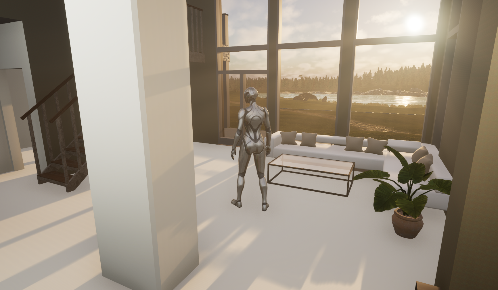

Unreal Engine
My Interactive Game World in Unreal Engine
As the final project of the course, I designed and built a complete game world in Unreal Engine. The goal was to combine the skills learned in previous exercises and create a visually functional, interactive environment where the player can move around and enjoy the scenery.

Key components of the assigment
- Custom terrain: I created the terrain myself using the Terresculpt tool, without using any pre-made height maps.
- Diverse foliage: I used various vegetation and natural elements such as trees, grass, and rock formations to enrich and bring life to the environment.
- Materials: I applied multiple different materials that blend together to create a cohesive and realistic look.
- Clear pathway: I designed a route for the player to follow while exploring the environment. The path is clearly distinguishable but still blends naturally into the landscape.
- Water element: The game world includes a lake, which adds atmosphere and realism.
- Building and interior: I added a building to the environment, which I carefully designed and textured. I used a pre-made exhibition house provided in the course.
- Lighning and audio: The lighting was adjusted to suit the environment, and background music was added to enhance the atmosphere.
Technical challenges and lessons learned:
I placed a large amount of trees and vegetation in the environment, which added visual richness and a natural feel. However, I noticed that excessive foliage can heavily impact graphics performance, so I had to make compromises between visual quality and performance optimization. This taught me the importance of resource management and finding a balance between visuals and functionality.

{kind=link}